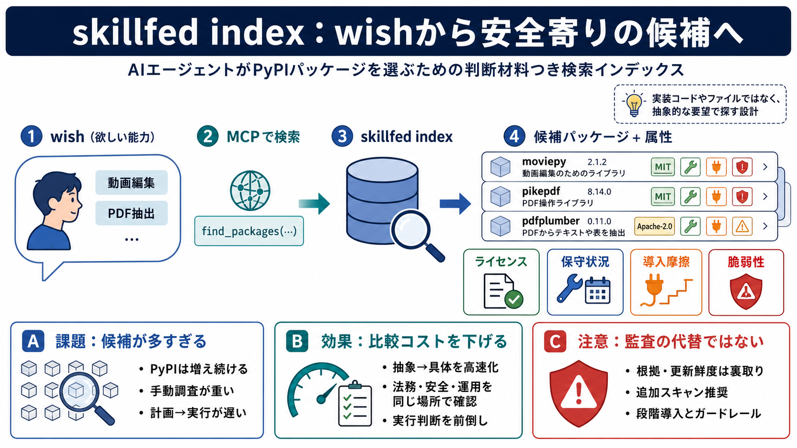

キーワード：自然文検索（wish）／MCP連携／ライセンス・保守・脆弱性・導入摩擦

AIエージェントがPyPIの大量パッケージから「本当に使う価値があるもの」を選ぶための、判断材料つき検索インデックスです。
PyPIでは新規パッケージが年間約70,000件増え、エージェントが全探索して安全に選ぶのは現実的ではありません。
エージェントの「欲しい能力」を自然文（wish）で渡し、判断に効く要約済み情報からパッケージ候補へ落とし込みます。
MCP（Model Context Protocol）経由でインデックスに問い合わせ、たとえば `find_packages` のような検索APIを呼び出します。
候補を比較できるように、導入判断に直結する属性を先回りして整理した「選択カード」を提供します。
skillfedは「候補探索」よりも前に、判断に必要な情報をまとめて返すことで、計画・実行ループを短縮する狙いがあります。
HTMLだけでなく機械可読な形でも提供され、チャットやCLI、Pythonから呼び出せる方向性が示されています。
実装は「コードやファイル、計画が外へ出ないようにする」思想として語られており、データ越境への懸念に配慮しています。
skillfedは「抽象→具体」を早め、候補選定に必要な観点（法務・セキュリティ・運用負担）を同じ場所で見せる方向性です。
提示資料では、ライセンス判定の厳密さ、脆弱性情報の取得元・更新タイミング、検索品質の評価指標が読み取れません。
skillfedは自動化を前に進める道具だが、強い法務・セキュリティ要件では最終確認を別プロセスに残すべきです。
以下はユーザー提供テキストに含まれている範囲のみを、スライド化の根拠として整理しています（追加の一次情報は未確認）。
・skillfed：PyPI機能インデックス／ライセンス・保守・インストール摩擦・脆弱性のカード化／natural language（wish）検索
・MCP連携：`connect over MCP`、`find_packages` 等の記述
・提供形態：HTML、`/llms.txt`、`/api/index.json`、`/api/q/
・注意点：更新頻度、取得元、厳密性、検索品質評価指標が不明である旨
No references found